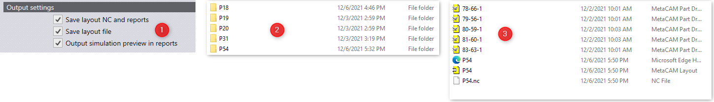
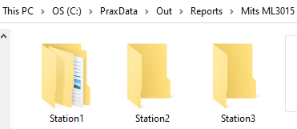
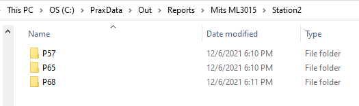

Use Output settings from factory • settings • job to control the outputs generated by Praxis. The outputs generated are saved at Cut output destination set at factory • settings • cut page. The nest outputs are saved to the individual folders named after the nested layout.

Save layout NC and reports: The NC file is saved to the output folder along with other outputs.
Save layout file: The nested layout along with the layout parts are saved to the output folder.
Output simulation preview in reports: Praxis outputs simulation animation to the html report it generates for the layouts. See the reports for more on this.
 Often users have multiple machine instances of same make (aka workstations). Create a subfolder for each workstation with the name prefix Station inside the machine output folder. Now each subfolder is considered as an output queue for the workstation and nest outputs are routed to them.
So, for instance in the example below, folders Station1, Station2 and Station3 are treated as output locations for 3 individual instances of machine Mits ML3015. And instead of a minimum of 3 nested layouts, a total of 9 are queued to them.

And the nesting triggers when the NC count in any of these folders fall below the cut-off. No additional configuration is needed apart from adding/removing the station folders. And this can be done without stopping and restarting the Praxis Monitor.